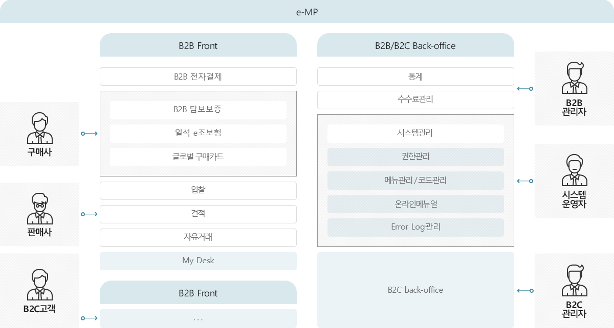

M2M-eMarketPlace 서비스 특징
M2M-eMarketPlace 솔루션은 B2B 비지니스를 위한 Buyer Company와 Seller Company간의 안정정 거래중개를 지원하며, 거래 매칭 시 금융지원 서비스로 B2B 전자결제, 담보보증, 글로벌 구매카드를 지원합니다.
-
기업간 거래 중개
- 전자입찰 방식을 통한 거래 매칭 견적거래
- 견적 거래 방식을 통한 기업간 견적 거래
- 자유 B2B장터를 통한 기업간 자율 거래
-
금융기반 보증 연계
- B2B전자결제 - 전자상거래 보증제도(2001년)
- B2B담보보증 - 반복적거래 대금결제 보증서제공
- 일석e조 보험 - 매출채권에 대해 보증하는 상품
-
강력한 B2B 백오피스 기능
- 수수료관리
- 통계관리
- 연계관리
- 보증기관과 e-MP 전자문서 송수신
M2M-eMarketPlace 비즈니스 구성도
